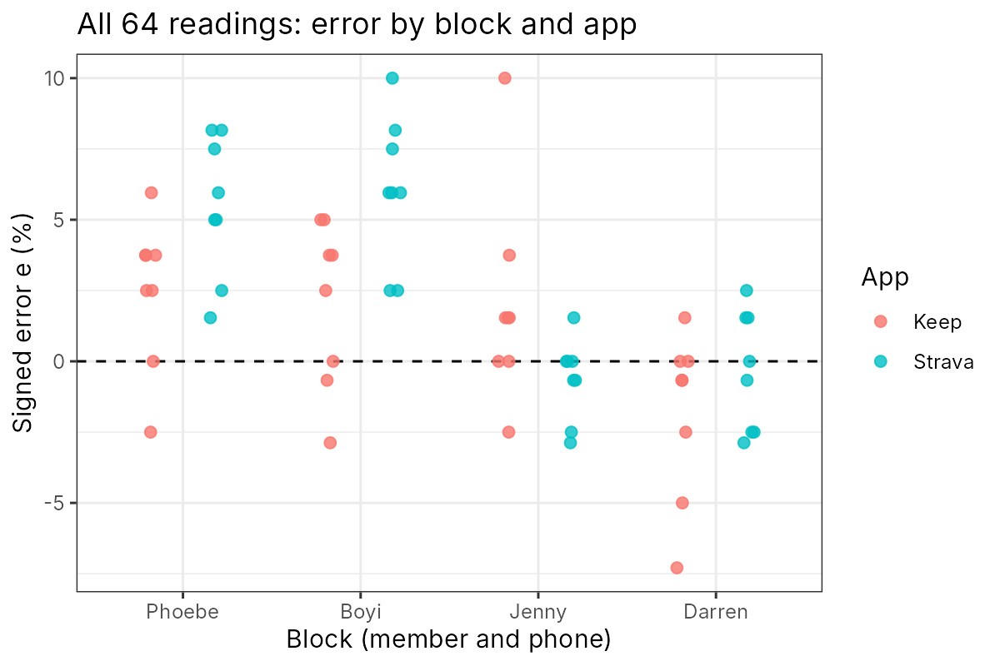
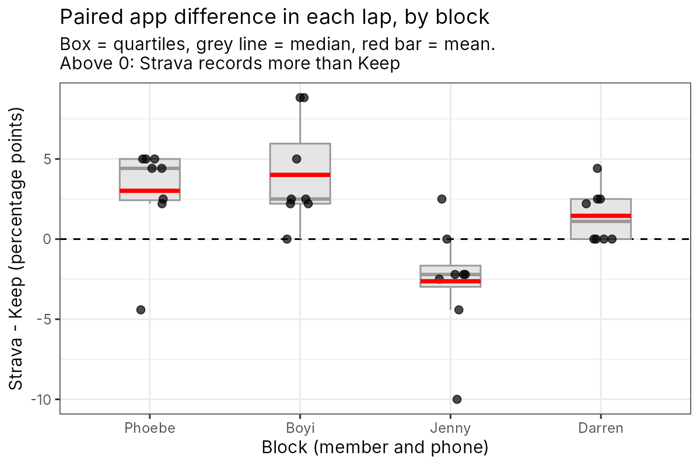
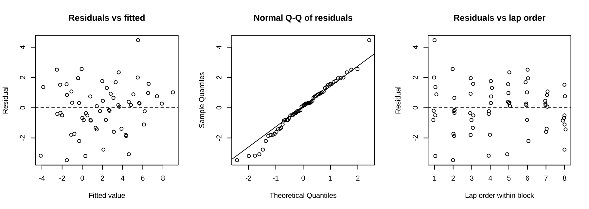
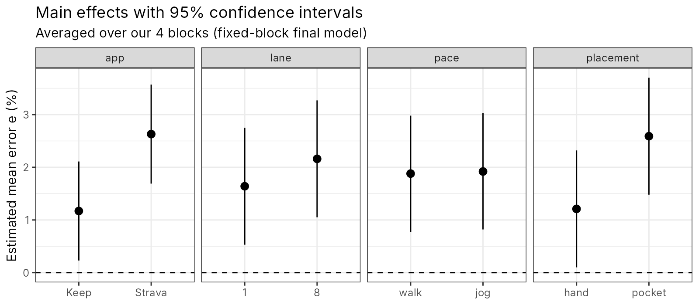
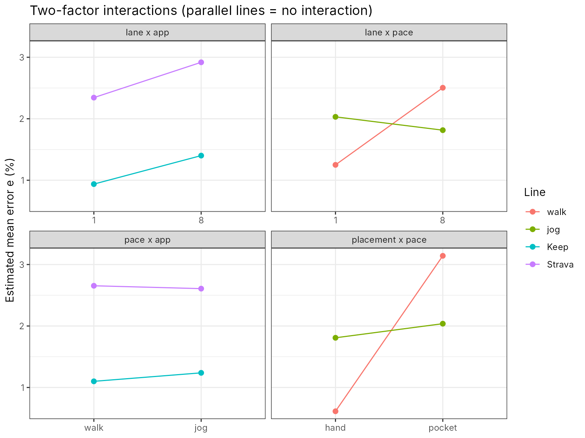
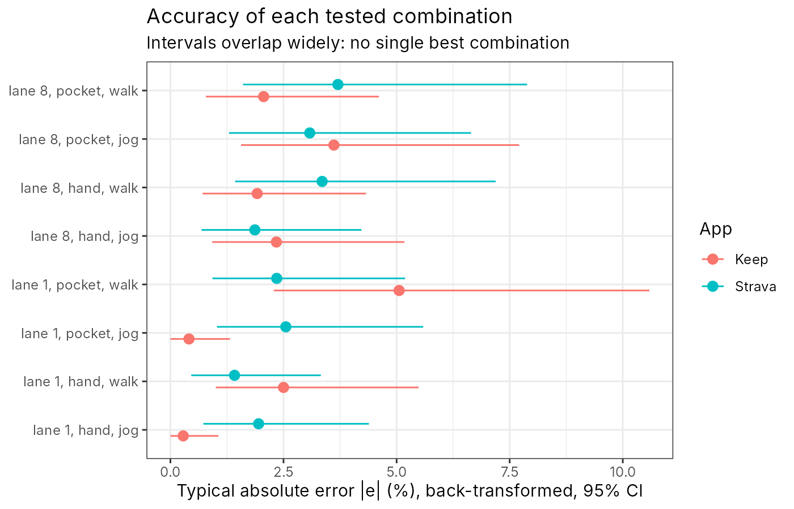

How Accurate Is Your Running App? Design, Analysis and Results of a GPS Distance Experiment
This page explains the gps-running-accuracy-doe
repository. All numbers come from report/results_summary.md
and the results/ folder in the repo; plots are in
figures/.
0. The project in one paragraph
Four of us walked or jogged 32 laps, in random order, on the same track at UBC, each carrying our own phone with Strava and Keep recording at the same time. We compared the distance each app recorded with the true lap length. The conclusion: the apps over-record by about 2% on average, and which app reads longer depends on whose phone it is. Lane, phone placement (hand or pocket) and pace (walk or jog) showed no clear effect at our sample size.
1. Where the research question comes from
Background: running apps measure distance with the phone’s GPS. GPS records a position every so often and joins the points together to compute a length. If the points are off, or too sparse on the curves, the computed distance comes out too long or too short.
Our three questions (the three aims in the proposal):
- Bias: do the apps systematically over- or under-record?
- Factors: which factors, and which combinations of factors, affect the error?
- Accuracy: which app and which setting is most accurate?
Bias and accuracy are different things. Bias is the direction the errors lean on average; accuracy is how far each error is from zero. An app that is +5% on one lap and −5% on the next has zero average bias, but it is never accurate. So the two questions need different measures (Section 3).
2. Experimental design: each choice and why
2.1 Treatment factors and levels
A factor is something we deliberately change to study its effect; the different values it takes are its levels. We have 4 factors with 2 levels each:
| Factor | Two levels | Why we chose it |
|---|---|---|
| App | Strava / Keep | The main comparison we care about; two popular free apps |
| Lane | 1 / 8 | Lane 8 has wider curves. GPS errors arise mainly on curves, so curvature may matter |
| Placement | In hand / front pocket | The two most common ways to carry a phone; the body may block the signal in a pocket |
| Pace | Walk / jog | Speed changes the spacing between GPS points, which affects how detailed the track is |
Why only 2 levels per factor: this is a 2⁴ factorial design (2 to the power 4 = 16 combinations). Two-level designs estimate every main effect and every interaction with the fewest runs; this is the standard 2^k design from class. The cost is that we only learn whether the two levels differ, not how the response changes in between.
Why factorial instead of changing one factor at a time: in a factorial design every level of every factor is combined with every level of the others. This has two benefits. Every observation contributes to estimating every factor, which is efficient. And we can estimate interactions: whether the effect of one factor depends on the level of another. For example, “the pocket matters a lot when walking but little when jogging” is a placement × pace interaction. One-factor-at-a-time experiments cannot detect interactions.
2.2 Blocking
A block is a group of runs that share a known source of variation that we are not studying. Comparisons are made within each block, so differences between blocks do not leak into the treatment comparisons.
Our blocks = one member with their own phone, four in total: Phoebe, Boyi, Jenny, Darren.
Why block: phones differ in GPS chips and antennas, and people differ in how they walk and carry the phone. These differences can be large, but they are not what we are studying. Without blocking they would become noise and make the app, lane and other effects harder to see. The data confirm the choice: the block effect is highly significant (p < 0.001).
Complete blocks: every block contains all 8 lap settings (lane × placement × pace), so each setting appears once for every member. Blocks and treatments are therefore not confounded: every treatment comparison is made in full within each member.
Why block is a fixed effect, not a random effect: we have only 4 blocks, and we care about these 4 specific phones; we are not trying to generalize to a population of all phones. Four levels are also too few to estimate a variance reliably. So block enters the model as an ordinary grouping variable (a fixed effect).
2.3 Experimental units and pairing
An experimental unit is the smallest unit that receives a treatment and gives an independent result. Our design has two sizes of unit:
- A lap is the unit for lane, placement and pace. These are set for the whole lap: which lane, where the phone is, walk or jog.
- One app reading within a lap is the unit for app. Strava and Keep were started and stopped together on every lap, so each lap gives two readings.
Because both apps record the same lap at the same time, the two readings are paired: they share all of that lap’s conditions (same person, same phone, same line actually walked, same satellites at that moment). When we compare apps, the lap’s own deviation cancels in the Strava − Keep difference, so the comparison is more precise. This is the same idea as a paired t-test, which analyzes the difference within each pair. If each app had its own laps, lap-to-lap differences would mix into the app comparison, and we would need twice as many laps for less precision.
A structure where some factors are set on large units and another factor is set on smaller units inside them is a split-plot design:
- Whole plot = a lap; whole-plot factors = lane, placement, pace
- Sub-plot = one app reading within a lap; sub-plot factor = app
The key point of a split-plot design is that whole-plot factors must be compared against lap-to-lap variation, while the sub-plot factor is compared against within-lap variation. The two error sizes differ, and the model in Section 8 is built to reflect this.
2.4 Randomization
The order of each member’s 8 laps was randomized in
R with set.seed(404), separately for each member.
Why randomize: conditions can drift during a session
in ways we cannot control: fatigue, falling battery, satellites moving
across the sky. If laps ran in a fixed order (say all walks, then all
jogs), such drift would be mixed up with pace, and we could not tell
whether a change in error came from speed or from time. Random order
spreads these drifts evenly over the treatments so they do not
systematically favour any one. set.seed(404) fixes the
random numbers, so anyone re-running the code gets the same order: the
design is reproducible.
All four members followed their random order exactly.
Example: Boyi’s random order (full table in
data/randomization_schedule.csv)
| Lap | Lane | Placement | Pace |
|---|---|---|---|
| 1 | 8 | hand | walk |
| 2 | 1 | hand | walk |
| 3 | 1 | hand | jog |
| 4 | 8 | jog | |
| 5 | 1 | walk | |
| 6 | 1 | jog | |
| 7 | 8 | hand | jog |
| 8 | 8 | walk |
R code · code/00_randomization.R, lines 1–34
# 00_randomization.R
# Randomize the run order of the 8 lane x pace x placement combinations
# independently within each block (owner-phone pair).
# One seed (404) is set once; the four blocks then get four consecutive,
# independent draws of sample(8), so each block has its own random order.
# This is the exact code from the project proposal; it also writes
# the resulting schedule to data/randomization_schedule.csv.
set.seed(404)
design <- expand.grid(
lane = c(1, 8),
pace = c("walk", "jog"),
placement = c("hand", "pocket")
)
members <- c("Phoebe", "Boyi", "Jenny", "Darren")
schedule <- list()
for (m in members) {
cat(m, "\n")
idx <- sample(8)
print(design[idx, ])
schedule[[m]] <- data.frame(
block = m,
lap_order = 1:8,
design_row = idx,
design[idx, ],
row.names = NULL
)
}
schedule <- do.call(rbind, schedule)
write.csv(schedule, "data/randomization_schedule.csv", row.names = FALSE)2.5 Replication
Each lap setting was run once per member, and there are 4 members, so each combination is replicated 4 times. In total 4 members × 8 laps = 32 laps, and 2 readings per lap = 64 app readings.
No member repeated the same setting, so the error is estimated from the variation left over between members and settings. The degrees of freedom (df) available for testing are:
- Between laps: 32 laps − 1 (overall mean) − 3 (blocks) − 7 (lane, placement, pace and their interactions) = 21
- Within laps: 32 paired differences − 8 (app and its interactions with the other factors) = 24
Degrees of freedom can be read as “how many independent pieces of information are left to estimate the error”. 21 and 24 are enough for testing.
3. The response: how we measure error
3.1 True distance
The true distance is this track’s official lap length on the measurement line: 400.00 m in lane 1 and 453.03 m in lane 8.
Why 453.03 m for lane 8: lanes are 1.22 m wide. The measurement line is 0.30 m from the kerb in lane 1 and 0.20 m from the inner line in other lanes. So the lane 8 line is 7 × 1.22 − 0.10 = 8.44 m further out than lane 1’s. The two curves together make one full circle, so the lap is 2π × 8.44 ≈ 53.03 m longer; the straights are unchanged. Hence 453.03 m.
The line we actually walked may differ slightly from the measurement line, so we ran a sensitivity analysis: recompute everything with the true distance shifted by ±1 m and see whether conclusions change (Section 10).
3.2 Signed percentage error e
- e > 0: the app over-records; e < 0: it under-records.
- Percent rather than metres: lane 8 is longer, so the same relative error is more metres there. Percent makes the two lanes comparable.
- Multiplying by 100 makes it a percentage. The original proposal’s formula left out the ×100; the reviewer pointed this out and it was corrected.
The signed error e answers Aims 1 and 2 (bias and factors).
3.3 Absolute error |e| and MAPE
- |e|: the absolute value of e: only the size of the error, not its direction.
- MAPE (mean absolute percentage error): the average of |e| over a group of readings.
These answer Aim 3 (accuracy), for the reason in Section 1: averaging e lets positive and negative errors cancel, so it does not reflect accuracy. Reviewer comment 5 made exactly this point.
3.4 Limit of measurement resolution
Both apps display distance only to 0.01 km, that is, in 10 m steps. The true value is rounded to the nearest 10 m, so every reading carries up to ±5 m of rounding error: ±1.25% in lane 1 and ±1.10% in lane 8. That is about the same size as many of the effects we want to detect, and it is the biggest limitation of the study. It also means the error takes only a few discrete values, which makes the Q–Q plot look stepped (Section 9).
4. Reviewer comments and how we handled them
After submitting the proposal we received 7 comments. The data had already been collected, so comments about analysis (3, 5, 6, 7) were fully addressed, while comments about data collection (1, 2, 4) could not be redone; for those we describe what we actually did and list the consequences as limitations.
| # | Comment | What we did |
|---|---|---|
| 1 | Standardize hand, phone orientation and pocket | Not standardized; each member used their own habit. Stated honestly; blocking absorbs habit differences between members. Cost: the placement effect is an average over four personal styles; listed as a limitation |
| 2 | Give practical walking and jogging speed ranges | No target speeds; each member used their natural pace. Stated honestly, listed as a limitation, with suggested ranges for future work |
| 3 | Multiply by 100; separate signed from absolute error | Corrected (Sections 3.2 and 3.3) |
| 4 | Verify this track’s true distance | Used the track’s measured lap lengths, 400.00 / 453.03 m, plus a ±1 m sensitivity analysis |
| 5 | Define typical absolute error, give its uncertainty, don’t declare a unique best combination from point estimates | MAPE with bootstrap intervals and a log model; no best combination declared (Section 11) |
| 6 | Say which interactions are in the model | Full 2⁴ structure, with the two-factor interactions of main interest and why |
| 7 | An additive block assumes the app effect is the same on every phone; plot app comparisons by block | Plotted it, found the assumption fails, and adjusted the model. This is the most important step of the analysis (Section 8) |
Being honest about what we did not do matters: if asked, saying clearly “we did not standardize it, this is the cost, and this is how we would fix it” is much better than being vague.
5. Data collection
- Site: the Rashpal Dhillon Track & Field Oval at UBC; all four members used the same track, so the site is not a source of variation.
- Dates and weather: Phoebe (partly cloudy) and Boyi (sunny) ran all laps on 12 November; Darren on 13 November (light rain); Jenny ran laps 1, 2 and 6 on 6 November (light rain) and the other five on 12 November (partly cloudy).
- Why weather and date don’t distort the results: each member ran almost everything on one day, so weather and date differences fall inside the member block and are absorbed by the block effect. Statistically, weather is confounded with block: we cannot separate “phone/person” from “weather”, but since we are not studying the block effect, the other comparisons are unaffected.
- One exception: Jenny’s three rainy laps on 6 November happened to be all walking laps, so within her block weather is partly confounded with pace. This came from the random order by chance; pointing it out shows we understand the design.
- Protocol: open both apps and wait 60 s for a GPS lock; start both at the finish line; walk or jog one lap in the assigned lane, close to the lane’s inner line; stop both when crossing the same line; record both distances and screenshot them.
- Start times were not recorded, so checks for trends over time use lap order.
6. Data preparation
The raw sheet has one row per lap with the Strava and Keep readings
side by side. Before analysis, the script
code/01_clean_data.R does the following; the raw sheet is
never edited by hand:
- Checks the data: 32 rows; 8 laps per member; each setting exactly once per member. This confirms the data match the design.
- Reshapes wide to long: one row per app reading, 64 rows. Mixed models need this format.
- Converts units: km to m.
- Recomputes the error using the exact 453.03 m for lane 8.
- Gives each lap a unique id (
lap_id, e.g.Boyi_3), shared by its two readings; this is how the model knows which readings are paired. Lap order 1–8 alone is not enough, because Phoebe’s lap 1 and Boyi’s lap 1 are different laps.
Writing the preparation as a script means anyone can re-run it and
get exactly the same data: the analysis is
reproducible. First rows of the prepared data
(data/processed/gps_runs.csv): one row per
reading; the two rows of a lap share lap_id.
| block | lap_order | lap_id | lane | placement | pace | app | true_distance_m | recorded_distance_m | error_pct |
|---|---|---|---|---|---|---|---|---|---|
| Phoebe | 1 | Phoebe_1 | 1 | hand | jog | Keep | 400 | 410 | 2.5 |
| Phoebe | 1 | Phoebe_1 | 1 | hand | jog | Strava | 400 | 430 | 7.5 |
| Phoebe | 2 | Phoebe_2 | 1 | hand | walk | Keep | 400 | 390 | −2.5 |
| Phoebe | 2 | Phoebe_2 | 1 | hand | walk | Strava | 400 | 410 | 2.5 |
| Phoebe | 3 | Phoebe_3 | 8 | hand | walk | Keep | 453.03 | 470 | 3.746 |
| Phoebe | 3 | Phoebe_3 | 8 | hand | walk | Strava | 453.03 | 490 | 8.161 |
R code · code/01_clean_data.R, lines 27–88
# ---- 1. Read and check the raw lap log --------------------------------------
raw <- read.csv("data/gps_track_data_log.csv", check.names = FALSE,
stringsAsFactors = FALSE)
# Basic checks on the raw log: 4 blocks x 8 laps, each combination once per block
stopifnot(nrow(raw) == 32)
stopifnot(all(table(raw[["Block (member)"]]) == 8))
stopifnot(all(table(raw[["Block (member)"]], raw$Lane, raw$Placement, raw$Pace) == 1))
# ---- 2. Reshape: one row per app reading -----------------------------------
# Columns shared by both app readings of a lap
lap <- data.frame(
block = raw[["Block (member)"]],
lap_order = raw[["Lap order"]],
lane = raw$Lane,
placement = raw$Placement,
pace = raw$Pace,
date = raw$Date,
weather = raw$Weather,
notes = raw$Notes
)
# Wide -> long: stack the Strava rows on top of the Keep rows
long <- rbind(
data.frame(lap, app = "Strava",
recorded_distance_m = round(1000 * raw[["Strava distance (km)"]])),
data.frame(lap, app = "Keep",
recorded_distance_m = round(1000 * raw[["Keep distance (km)"]]))
)
# ---- 3. True distance and percentage error ---------------------------------
# True lap length on this track's measurement line (lane 1 and lane 8)
long$true_distance_m <- ifelse(long$lane == 1, 400.00, 453.03)
# Signed percentage error: > 0 means the app over-records
long$error_pct <- 100 * (long$recorded_distance_m - long$true_distance_m) /
long$true_distance_m
# One id per lap, e.g. "Boyi_3"; the Strava and Keep readings of a lap share it.
# lap_order alone (1-8) is not enough: Phoebe's lap 1 and Boyi's lap 1 are
# different laps, so the id combines block and lap order (32 distinct laps).
long$lap_id <- paste(long$block, long$lap_order, sep = "_")
# ---- 4. Save ----------------------------------------------------------------
# Order rows by block, lap order, then app
long$block <- factor(long$block, levels = c("Phoebe", "Boyi", "Jenny", "Darren"))
long <- long[order(long$block, long$lap_order, long$app), ]
out <- long[, c("block", "lap_order", "lap_id", "lane", "placement", "pace",
"app", "true_distance_m", "recorded_distance_m", "error_pct",
"date", "weather", "notes")]
out$error_pct <- round(out$error_pct, 3)
stopifnot(nrow(out) == 64, !anyNA(out$recorded_distance_m))
dir.create("data/processed", showWarnings = FALSE, recursive = TRUE)
write.csv(out, "data/processed/gps_runs.csv", row.names = FALSE, na = "")
cat("Wrote data/processed/gps_runs.csv:", nrow(out), "rows\n")7. Look at the data first
Plotting all 64 readings by member and app
(figures/01_raw_error_by_block.png) shows:
- Most readings are above 0: the apps generally over-record.
- On Phoebe’s and Boyi’s phones Strava is clearly higher than Keep; on Jenny’s it is the other way round; on Darren’s they are similar.
Plotting before modelling shows what the data look like, reveals any outliers, and gives clues for checking model assumptions later. The pattern seen here, the app difference changing direction between members, turns out to be the key finding.

R code · code/02_analysis.R, lines 35–65
# ---- 2. Descriptive summaries ----------------------------------------------
# n, mean and SD of the signed error, and MAPE = mean of |e|, for each group
summarise_e <- function(formula) {
out <- aggregate(formula, data = dat, FUN = function(e)
round(c(n = length(e), mean = mean(e), sd = sd(e), mape = mean(abs(e))), 2))
out <- do.call(data.frame, out) # turn the matrix column into ordinary columns
names(out) <- sub("error_pct.", "", names(out), fixed = TRUE)
out
}
by_app <- summarise_e(error_pct ~ app)
by_block <- summarise_e(error_pct ~ block + app)
by_cell <- summarise_e(error_pct ~ app + lane + placement + pace)
print(by_app)
print(by_block)
write.csv(by_app, "results/summary_by_app.csv", row.names = FALSE)
write.csv(by_block, "results/summary_by_block_app.csv", row.names = FALSE)
write.csv(by_cell, "results/summary_by_treatment.csv", row.names = FALSE)
# Raw data plot: every reading, by block and app
p_raw <- ggplot(dat, aes(x = block, y = error_pct, colour = app)) +
geom_hline(yintercept = 0, linetype = "dashed") +
geom_point(position = position_jitterdodge(jitter.width = 0.15,
jitter.height = 0, seed = 1),
size = 2, alpha = 0.8) +
labs(x = "Block (member and phone)", y = "Signed error e (%)", colour = "App",
title = "All 64 readings: error by block and app") +
theme_bw()
ggsave("figures/01_raw_error_by_block.png", p_raw, width = 6, height = 4, dpi = 200)8. The statistical model
8.1 Why a linear mixed model
The idea of a linear model: each reading = overall mean + shifts caused by each factor + random error. The model estimates how big each shift is and whether it is clearly larger than random variation.
A mixed model contains two kinds of effects:
- Fixed effects: factors whose specific values we want to estimate: app, lane, placement, pace, block.
- Random effects: things whose individual values we don’t care about, only how much they vary. Here: each lap’s own shift.
The model in R:
lmer(e ~ block + app * lane * placement * pace + (1 | lap_id))Term by term:
e ~ ...: explain the error e with the terms on the right.block: each member has their own average level (fixed effect).app * lane * placement * pace:*means “main effects plus all interactions”: 4 main effects, 6 two-factor, 4 three-factor and 1 four-factor interaction, 15 terms in total, i.e. the full 2⁴ factorial structure.(1 | lap_id): a random intercept. Read the bar as “for each group of”; the1is an intercept (a level shift). Each lap gets its own random shift, drawn from a normal distribution with mean 0, and the model estimates the standard deviation of those shifts.
8.2 Why the lap random effect is required
A reading can be split into: overall mean + block + treatment effects + this lap’s shift + the reading’s own error.
“This lap’s shift” is whatever is specific to that lap after removing block and treatments: the satellite geometry at the time, how close to the inner line the person actually walked, whether they had to step around someone. It has nothing to do with the treatments, but both readings of the lap share it, so they are not independent. Example: on Darren’s lap 4, Strava read −2.9% and Keep −7.3%; both are clearly low, probably because that lap as a whole came out short.
Without this term, an ordinary linear regression (lm)
would treat the 64 readings as 64 independent runs. But lane, placement
and pace are applied to laps, and there are only 32 independent laps.
This is pseudo-replication: treating repeated
measurements of one unit as independent replicates, which understates
the error and overstates significance. With our data, dropping the
random effect changes the placement p-value from 0.081 to 0.042, a false
“significant” result, while the app comparison gets weaker (p from 0.015
to 0.032) because the pairing is no longer used.
In our data a test of the lap random effect alone gives p = 0.15, so lap-to-lap differences are modest. It is kept anyway because it is dictated by the design (the split-plot structure) and was decided before looking at the data. Dropping it because it is not significant would mean choosing the model by looking at the data.
R code · code/02_analysis.R, lines 67–96
# ---- 3. Planned model: additive block --------------------------------------
# Fixed: block + full 2^4 factorial of app, lane, placement, pace
# Random: (1 | lap_id) = one random intercept for each of the 32 laps.
# In "(1 | lap_id)", "|" means "for each group of"; the 1 is an intercept.
# So every lap gets its own shift u_lap ~ N(0, sigma_lap^2), and the model
# estimates sigma_lap rather than 32 separate shifts.
#
# Why it is needed: both apps recorded the SAME lap at the same time, so the
# two readings share that lap's conditions (the line actually walked, the
# satellites at that moment, ...) beyond what block and treatments explain.
# This is a split-plot structure:
# - whole plot = lap; whole-plot factors = lane, placement, pace
# (each lap gets a different combination; they are compared between laps,
# so their error is lap-to-lap variation: 32 laps, 21 residual df)
# - sub-plot = app reading within a lap; sub-plot factor = app
# (compared within laps, so the lap shift cancels, as in a paired t test)
# Dropping (1 | lap_id) and using lm() would treat the 64 readings as
# independent (pseudo-replication): in the final model (section 4) the
# placement p-value would fall from 0.08 to 0.04, a false "significant"
# result, while the app test would lose the benefit of pairing. The term is kept because the design requires
# it, whether or not it is significant in this data set.
fit_add <- lmer(error_pct ~ block + app * lane * placement * pace + (1 | lap_id),
data = dat)
anova_add <- anova(fit_add) # Type III F tests, Satterthwaite df
print(anova_add)
print(VarCorr(fit_add)) # lap-to-lap SD and residual SD
write.csv(round(as.data.frame(anova_add), 4), "results/anova_additive_model.csv")8.3 Effect coding
The model uses effect coding (sum-to-zero contrasts): each effect is how far a level sits above or below the overall mean, and the two levels’ effects add to zero. This matches the +1/−1 definition of effects for 2^k designs in class. With interactions in the model, this coding gives the tests (Type III ANOVA) a clear meaning.
R code · code/02_analysis.R, lines 19–33
# ---- 1. Data ---------------------------------------------------------------
dat <- read.csv("data/processed/gps_runs.csv")
# Treat every design variable as a factor (lane 1/8 is a category, not a number)
dat$block <- factor(dat$block, levels = c("Phoebe", "Boyi", "Jenny", "Darren"))
dat$app <- factor(dat$app, levels = c("Keep", "Strava"))
dat$lane <- factor(dat$lane)
dat$placement <- factor(dat$placement, levels = c("hand", "pocket"))
dat$pace <- factor(dat$pace, levels = c("walk", "jog"))
dat$lap_id <- factor(dat$lap_id)
# Sum-to-zero (effect) coding, so each factorial effect is a deviation
# from the overall mean and the ANOVA tests match the usual 2^k effects
options(contrasts = c("contr.sum", "contr.poly"))8.4 F-tests and p-values
ANOVA (analysis of variance) splits the total variation in the data among the factors. For each factor it computes an F statistic = variation explained by the factor ÷ random-error variation. The larger F is, the more the factor’s effect exceeds random noise.
p-value: if the factor truly had no effect, the probability of getting an F at least this large from random variation alone. A small p (usually < 0.05) means “no effect” is hard to believe, and the effect is called statistically significant.
Keep in mind:
- p > 0.05 does not mean “no effect”; it means “not detected at this sample size”. With small samples, real but small effects can go undetected.
- A p-value says nothing about how large an effect is. Size comes from the estimate and its confidence interval.
In a mixed model the denominator degrees of freedom for F-tests are computed with the Satterthwaite approximation (R package lmerTest); they agree with the 21 and 24 from the split-plot structure in Section 2.5.
8.5 Checking an assumption: is the app effect the same on every phone?
In the model above, block is additive:
it assumes each member’s readings are shifted up or down as a whole, so
the Strava − Keep difference is the same on every phone. Reviewer
comment 7 asked us to check this.
How we checked: for each lap, compute Strava − Keep
and plot the differences by member
(figures/02_app_difference_by_block.png, the plot on slide
4).
Result:
| Member | Strava − Keep (percentage points) | 95% confidence interval |
|---|---|---|
| Phoebe | +3.02 | 0.73 to 5.30 |
| Boyi | +4.01 | 1.72 to 6.30 |
| Jenny | −2.63 | −4.92 to −0.34 |
| Darren | +1.45 | −0.83 to 3.74 |
Strava reads longer on three phones, and Keep reads longer on Jenny’s: the direction reverses. The medians in the box plot show the same pattern, so a few outliers are not driving it.

Adjusting the model: add an app × block interaction, which lets each phone have its own app difference:
lmer(e ~ block * app + app * lane * placement * pace + (1 | lap_id))Likelihood-ratio test (LRT): compares how well two models fit. The likelihood measures how probable the observed data are under a model. The model with the interaction has a clearly higher likelihood: test statistic χ² = 22.4 on 3 df (4 − 1 = 3 extra parameters), p < 0.001. The F-test for app × block in the new model gives p = 0.002, the same conclusion. For an LRT between models with different fixed effects, both are refitted by ML (maximum likelihood) instead of the default REML; R handles this automatically.
Why add the interaction? Not just because of the p-value: the original model assumed the app difference is the same on every phone; following the reviewer’s comment we checked that assumption, saw that the difference varies a lot and even reverses direction on Jenny’s phone, so the model has to let it vary by phone. The test only confirms that what we saw is not random noise. This is what the rubric calls “model adjusted if necessary”: planned model → check assumption → find a violation → adjust the model → explain why.
How to read the app main effect after adding the interaction: averaged over the four phones, Strava records about 1.5 percentage points more than Keep (p = 0.015). But since the direction differs between phones, we put more weight on the block-by-block results and do not say “Strava always reads longer”.
In the final model the lap-to-lap SD is about 1.45 percentage points and the residual SD about 2.20.
R code · code/02_analysis.R, lines 98–147
# ---- 4. Is the app effect the same on every phone? (review comment 7) -------
# Paired difference within each lap: Strava minus Keep
wide <- reshape(dat[, c("lap_id", "block", "app", "error_pct")],
idvar = c("lap_id", "block"), timevar = "app", direction = "wide")
wide$diff <- wide$error_pct.Strava - wide$error_pct.Keep
p_diff <- ggplot(wide, aes(x = block, y = diff)) +
geom_hline(yintercept = 0, linetype = "dashed") +
# light box plot underneath; outliers hidden because every point is drawn
geom_boxplot(width = 0.4, outlier.shape = NA, fill = "grey90", colour = "grey60") +
geom_point(position = position_jitter(width = 0.1, height = 0, seed = 1),
size = 2, alpha = 0.7) +
stat_summary(fun = mean, geom = "crossbar", width = 0.4, colour = "red") +
labs(x = "Block (member and phone)", y = "Strava - Keep (percentage points)",
title = "Paired app difference in each lap, by block",
subtitle = "Box = quartiles, grey line = median, red bar = mean.\nAbove 0: Strava records more than Keep") +
theme_bw()
ggsave("figures/02_app_difference_by_block.png", p_diff, width = 6, height = 4, dpi = 200)
# Sensitivity model: add the app x block interaction (3 df)
fit_int <- lmer(error_pct ~ block * app + app * lane * placement * pace + (1 | lap_id),
data = dat)
# Likelihood-ratio test of the 3 extra terms (refit with ML to compare)
lrt <- anova(fit_add, fit_int, refit = TRUE)
print(lrt)
anova_int <- anova(fit_int)
print(anova_int)
write.csv(round(as.data.frame(anova_int), 4), "results/anova_final_model.csv")
# App difference (Strava - Keep) within each block, with 95% CIs
app_by_block <- confint(contrast(emmeans(fit_int, ~ app | block), "revpairwise"))
print(app_by_block)
app_by_block_df <- as.data.frame(app_by_block)
app_by_block_df[, 3:7] <- round(app_by_block_df[, 3:7], 2)
write.csv(app_by_block_df, "results/app_difference_by_block.csv", row.names = FALSE)
# The interaction is clear, so fit_int is used as the final model from here on
fit <- fit_int
# Aim 2 also asks about interactions among the treatment factors: the
# smallest p-value among all 11 two-, three- and four-way interactions of
# app, lane, placement and pace (block:app is reported separately above)
int_terms <- grep(":", rownames(anova_int), value = TRUE)
int_terms <- setdiff(int_terms, "block:app")
int_p <- anova_int[int_terms, "Pr(>F)"]
cat(sprintf("Treatment-factor interactions: %d terms, smallest p = %.2f (%s)\n",
length(int_terms), min(int_p), int_terms[which.min(int_p)]))9. Model checking: do the assumptions hold?
A linear model assumes the errors average zero, have equal variance
across groups, are roughly normal, and are independent.
Residuals = observed value − model prediction; we use
them to check these assumptions
(figures/03_diagnostics.png):
- Residuals vs fitted values: look for curvature (the model is missing something) or a funnel shape (variance changes with the predicted value). Result: random scatter, no problem.
- Normal Q–Q plot: compares the quantiles of the residuals with those of a normal distribution; points along the line mean roughly normal. Result: close to the line (Shapiro–Wilk normality test p = 0.67, normality not rejected). It is slightly stepped because readings come in 10 m steps.
- Residuals vs lap order: look for a trend as laps go on, e.g. fatigue or battery. Result: no trend (correlation −0.05, p = 0.71). This also suggests the randomization did its job.
We also checked whether the residual spread is the same for all four members (Bartlett test p = 0.96): equal variances.

The largest residual is Jenny’s lap 1 Keep reading (+10%, residual +4.5). It is a single point and does not change the conclusions.
Why no transformation (such as Box-Cox): transformations fix unequal variance or non-normal residuals. The diagnostics show neither problem, so there is no reason to transform. Box-Cox also needs all values positive, and the signed error has negative values. Leaving e untransformed keeps the intuitive “over-records by so many percentage points” interpretation.
R code · code/02_analysis.R, lines 149–170
# ---- 5. Model checking ------------------------------------------------------
dat$fitted <- fitted(fit)
dat$resid <- resid(fit)
png("figures/03_diagnostics.png", width = 9, height = 3.2, units = "in", res = 200)
par(mfrow = c(1, 3))
plot(dat$fitted, dat$resid, xlab = "Fitted value", ylab = "Residual",
main = "Residuals vs fitted")
abline(h = 0, lty = 2)
qqnorm(dat$resid, main = "Normal Q-Q of residuals")
qqline(dat$resid)
set.seed(1) # fixed jitter so the figure is reproducible
plot(jitter(dat$lap_order, 0.5), dat$resid, xlab = "Lap order within block",
ylab = "Residual", main = "Residuals vs lap order")
abline(h = 0, lty = 2)
invisible(dev.off())
# Numerical companions to the plots
print(shapiro.test(dat$resid)) # normality of residuals
print(cor.test(dat$resid, dat$lap_order)) # trend over the session?
print(bartlett.test(resid ~ block, data = dat)) # equal spread across blocks?10. Estimated effects and sensitivity analysis
10.1 Estimated marginal means
Estimated marginal means (emmeans): the model’s estimate of the mean error at one level, averaging over the other factors. For example, the estimate for “hand” averages over lane, pace, app and block. Unlike a raw average, it is based on the model and comes with a correct confidence interval.
95% confidence interval (CI): a range likely to contain the true value. If the experiment were repeated many times, 95% of intervals computed this way would cover the true value. An interval that excludes 0 means the effect is significant at the 5% level. Narrower intervals mean more precise estimates.
| Estimated mean error | 95% CI | |
|---|---|---|
| Overall | +1.90% | 1.12% to 2.68% |
| Keep | +1.17% | 0.23% to 2.11% |
| Strava | +2.63% | 1.69% to 3.57% |
| Lane 1 / lane 8 | 1.64% / 2.16% | p = 0.50 |
| Hand / pocket | 1.21% / 2.59% | p = 0.08 |
| Walk / jog | 1.88% / 1.92% | p = 0.95 |

- Answer to Aim 1: overall +1.90%, with an interval excluding 0: the apps systematically over-record, by about 8 m per 400 m lap. One plausible reason is that GPS points jitter randomly, so the zig-zag line through them is longer than the true path.
- Answer to Aim 2: block and app × block have by far the largest effects (p ≤ 0.002). Lane and pace: no effect detected at our sample size. Placement: weak evidence (pocket about 1.4 percentage points higher than hand, p = 0.08, interval includes 0), not enough to conclude.
- All 11 interactions among the treatment factors have p > 0.12,
none detected. In the interaction plot
(
figures/05_interactions.png) two pairs of lines cross (lane × pace and placement × pace), but the tests are not significant, so the crossing is most likely noise.

Power: with a small sample, a test has a low chance of detecting a real effect. We have only 4 readings per app × setting, plus the 10 m resolution, so power is limited and “not detected” must be read with care.
R code · code/02_analysis.R, lines 172–228
# ---- 6. Estimated effects (aims 1 and 2) ------------------------------------
# Estimated mean error, with 95% CI, for each level of the factors in `spec`.
# Returns a plain data frame with a "level" column naming the level.
em_table <- function(spec) {
em <- as.data.frame(confint(emmeans(fit, spec)))
vars <- all.vars(spec)
em$level <- if (length(vars) == 0) "overall" else
do.call(paste, c(lapply(vars, function(v) paste(v, em[[v]])), sep = ", "))
em[, c("level", "emmean", "SE", "df", "lower.CL", "upper.CL")]
}
# Aim 1: average signed error overall and for each app.
# These average over the four blocks ("a typical phone in our study");
# section 4 shows that the app difference changes sign between blocks.
# Aim 2: mean error at each level of lane, placement and pace.
means <- rbind(em_table(~ 1), em_table(~ app), em_table(~ lane),
em_table(~ placement), em_table(~ pace))
means[, -1] <- round(means[, -1], 2)
print(means)
write.csv(means, "results/estimated_means.csv", row.names = FALSE)
# Main-effect plot: estimated mean error at each level, with 95% CIs
main <- means[means$level != "overall", ]
main$factor <- sub(" .*", "", main$level) # e.g. "placement"
main$value <- factor(sub("^\\S+ ", "", main$level), # e.g. "pocket"
levels = unique(sub("^\\S+ ", "", main$level)))
p_main <- ggplot(main, aes(x = value, y = emmean)) +
geom_hline(yintercept = 0, linetype = "dashed") +
geom_pointrange(aes(ymin = lower.CL, ymax = upper.CL)) +
facet_wrap(~ factor, scales = "free_x", nrow = 1) +
labs(x = NULL, y = "Estimated mean error e (%)",
title = "Main effects with 95% confidence intervals",
subtitle = "Averaged over our 4 blocks (fixed-block final model)") +
theme_bw()
ggsave("figures/04_main_effects.png", p_main, width = 8, height = 3.5, dpi = 200)
# Interaction plots for the two-factor interactions of primary interest:
# x-axis factor, line (trace) factor
pairs_of_interest <- list(c("lane", "pace"), c("placement", "pace"),
c("lane", "app"), c("pace", "app"))
int_data <- do.call(rbind, lapply(pairs_of_interest, function(p) {
em <- as.data.frame(emmeans(fit, as.formula(paste("~", p[1], "*", p[2]))))
data.frame(panel = paste(p[1], "x", p[2]),
x = as.character(em[[p[1]]]), trace = as.character(em[[p[2]]]),
emmean = em$emmean)
}))
# keep the level order used in the data (walk before jog, etc.)
int_data$x <- factor(int_data$x, levels = unique(int_data$x))
int_data$trace <- factor(int_data$trace, levels = unique(int_data$trace))
p_int <- ggplot(int_data, aes(x = x, y = emmean, colour = trace, group = trace)) +
geom_point(size = 2) + geom_line() +
facet_wrap(~ panel, scales = "free_x") +
labs(x = NULL, y = "Estimated mean error e (%)", colour = "Line",
title = "Two-factor interactions (parallel lines = no interaction)") +
theme_bw()
ggsave("figures/05_interactions.png", p_int, width = 8, height = 6, dpi = 200)10.2 Sensitivity analysis: what if the true distance is off?
Shift the true distance by −1 m and +1 m, recompute the error and refit the model:
| True distance | Overall mean error | app × block p | app p |
|---|---|---|---|
| −1 m | 2.14% | 0.0018 | 0.0147 |
| As measured | 1.90% | 0.0018 | 0.0147 |
| +1 m | 1.66% | 0.0018 | 0.0147 |
The overall mean moves by only about ±0.24 percentage points and every p-value is unchanged. Shifting the true distance is almost the same as subtracting one constant from every error; the tests compare differences, so the constant cancels and only the overall mean moves. So a small gap between the walked line and the measurement line does not affect the conclusions.
Sensitivity analysis in general: change an uncertain assumption and see whether the conclusion holds. If it does, the conclusion does not depend on that assumption.
R code · code/02_analysis.R, lines 230–243
# ---- 7. Sensitivity to the true lap length ----------------------------------
# Our walked line may differ slightly from the official measurement line.
# Shift d_true by -1 m and +1 m, refit the final model, and compare.
for (shift in c(-1, 0, 1)) {
d_true <- dat$true_distance_m + shift
dat$e_shift <- 100 * (dat$recorded_distance_m - d_true) / d_true
m <- lmer(e_shift ~ block * app + app * lane * placement * pace + (1 | lap_id),
data = dat)
a <- anova(m)
cat(sprintf("d_true %+d m: overall mean e = %.2f%%, app x block p = %.4f, app p = %.4f\n",
shift, summary(emmeans(m, ~ 1))$emmean,
a["block:app", "Pr(>F)"], a["app", "Pr(>F)"]))
}11. Accuracy (Aim 3)
11.1 MAPE with bootstrap confidence intervals
| MAPE | 95% bootstrap CI | |
|---|---|---|
| Keep | 2.71% | 1.97% to 3.53% |
| Strava | 3.58% | 2.95% to 4.22% |
| Strava − Keep | 0.87 percentage points | −0.11 to 1.76 |
MAPE is just an average with no ready-made formula for its confidence interval, so we use the bootstrap to estimate its variability:
- Within each member, draw 8 laps with replacement from that member’s 8 laps (some laps are drawn twice, some not at all).
- For every lap drawn, take both its Strava and Keep readings, keeping the pairs together.
- Compute each app’s MAPE on this new sample.
- Repeat 5000 times; the middle 95% of the 5000 results is the confidence interval.
Resampling within members keeps the “4 blocks × 8 laps” structure; resampling whole laps keeps the pairing. The bootstrap idea: treat the sample as a miniature of the population and see how the statistic varies when we resample from it.
Conclusion: Keep has the lower MAPE, but the interval for the difference includes 0, so we cannot statistically tell which app is more accurate. We say “Keep has a lower observed MAPE, but the difference is not significant”, not “Keep is more accurate”.
MAPE also depends on the phone: Strava’s MAPE is about 5.5% and 6.1% on Phoebe’s and Boyi’s phones but only 1.0% and 1.8% on Jenny’s and Darren’s. Once again the phone matters more than the app.
R code · code/03_absolute_error.R, lines 33–66
# ---- 1. MAPE by app with a bootstrap CI -------------------------------------
# Resample whole laps (both app readings together) within each block, so every
# bootstrap sample keeps the design: 4 blocks x 8 laps, paired readings.
mape_by_app <- function(d) tapply(d$abs_e, d$app, mean)
laps_in_block <- split(as.character(dat$lap_id), dat$block)
laps_in_block <- lapply(laps_in_block, unique)
rows_of_lap <- split(seq_len(nrow(dat)), as.character(dat$lap_id))
set.seed(404)
B <- 5000
boot <- replicate(B, {
laps <- unlist(lapply(laps_in_block, sample, replace = TRUE))
mape_by_app(dat[unlist(rows_of_lap[laps]), ])
})
boot_diff <- boot["Strava", ] - boot["Keep", ]
mape_table <- data.frame(
app = c("Keep", "Strava", "Strava - Keep"),
mape = c(mape_by_app(dat), diff(mape_by_app(dat))),
boot_lo = c(apply(boot, 1, quantile, 0.025), quantile(boot_diff, 0.025)),
boot_hi = c(apply(boot, 1, quantile, 0.975), quantile(boot_diff, 0.975))
)
mape_table[, -1] <- round(mape_table[, -1], 2)
print(mape_table)
write.csv(mape_table, "results/mape_by_app_bootstrap.csv", row.names = FALSE)
# MAPE by block and app (descriptive)
mape_block <- aggregate(abs_e ~ block + app, data = dat, FUN = mean)
mape_block$abs_e <- round(mape_block$abs_e, 2)
names(mape_block)[3] <- "mape"
print(mape_block)
write.csv(mape_block, "results/mape_by_block_app.csv", row.names = FALSE)11.2 Model for log absolute error
To compare accuracy across factors and the 16 combinations at once, we need a model. But |e| cannot go straight into a linear model: it is always ≥ 0, skewed, and often exactly 0. So we model log(|e| + 0.5):
- The log makes the distribution more symmetric.
- Adding 0.5 avoids log(0) = −infinity. With 0.25 or 1 instead, the app p-value is 0.16, 0.14 or 0.12: same conclusion.
- Same structure as the final model, including app × block.
- Results are back-transformed to percent: exp(estimate) − 0.5. Averaging on the log scale and back-transforming gives a “typical” absolute error close to the median, so it is smaller than MAPE: Keep 1.83% (1.32–2.47), Strava 2.44% (1.80–3.26).
Results:
- App not significant (p = 0.14), consistent with the bootstrap.
- App × block significant (p = 0.03): accuracy also depends on the phone.
- The app × lane × pace three-factor interaction is highly significant (p < 0.001); for example, Keep was especially accurate when jogging in lane 1. But 17 terms were tested, each cell has only 4 readings, and a three-factor interaction is hard to interpret. The more tests you run, the more likely one comes out “significant” by chance; this is the multiple comparisons problem. So this result is treated as exploratory, a lead for a future experiment, not a conclusion.
R code · code/03_absolute_error.R, lines 68–99
# ---- 2. Model for log(|e| + 0.5) ---------------------------------------------
# |e| is skewed and often 0, so model log(|e| + 0.5) with the same final mixed
# model as the signed error (including app x block, see 02_analysis.R). Back-transformed means are "typical" (median-like)
# absolute errors, so they are smaller than MAPE.
dat$log_abs <- log(dat$abs_e + 0.5)
fit_abs <- lmer(log_abs ~ block * app + app * lane * placement * pace + (1 | lap_id),
data = dat)
anova_abs <- anova(fit_abs)
print(anova_abs)
write.csv(round(as.data.frame(anova_abs), 4), "results/anova_log_abs_error.csv")
back <- function(x) pmax(exp(x) - 0.5, 0) # undo log(|e| + 0.5); |e| >= 0
typical <- function(spec) {
em <- as.data.frame(confint(emmeans(fit_abs, spec)))
data.frame(em[, all.vars(spec), drop = FALSE],
typical_abs_e = back(em$emmean),
lower = back(em$lower.CL), upper = back(em$upper.CL))
}
typ_app <- typical(~ app)
typ_cell <- typical(~ app * lane * placement * pace)
print(typ_app, digits = 3)
write.csv(transform(typ_cell, typical_abs_e = round(typical_abs_e, 2),
lower = round(lower, 2), upper = round(upper, 2)),
"results/typical_abs_error_by_treatment.csv", row.names = FALSE)
# Check that the conclusion does not hinge on the constant 0.5
for (k in c(0.25, 0.5, 1)) {
m <- lmer(log(abs_e + k) ~ block * app + app * lane * placement * pace + (1 | lap_id),
data = dat)
cat(sprintf("constant %.2f: app p = %.3f\n", k, anova(m)["app", "Pr(>F)"]))
}11.3 Why we do not declare a “best combination”
The typical absolute error and interval for all 16 combinations (2
apps × 8 settings) are plotted in
figures/06_typical_abs_error_by_treatment.png. The
intervals overlap heavily. With only 4 readings per app per setting,
picking the smallest point estimate would very likely be picking luck.
Reviewer comment 5 explicitly asked us not to do this. Our conclusion:
there is no statistically distinguishable single best
combination.

R code · code/03_absolute_error.R, lines 101–113
# ---- 3. Plot: typical |e| for all 16 treatment combinations ------------------
typ_cell$combo <- with(typ_cell, paste0("lane ", lane, ", ", placement, ", ", pace))
p_cell <- ggplot(typ_cell, aes(x = typical_abs_e, y = combo, colour = app)) +
geom_pointrange(aes(xmin = lower, xmax = upper),
position = position_dodge(width = 0.5)) +
labs(x = "Typical absolute error |e| (%), back-transformed, 95% CI",
y = NULL, colour = "App",
title = "Accuracy of each tested combination",
subtitle = "Intervals overlap widely: no single best combination") +
theme_bw()
ggsave("figures/06_typical_abs_error_by_treatment.png", p_cell,
width = 7, height = 4.5, dpi = 200)12. Conclusions
- Bias: the apps over-record by about 1.9% on average (95% CI 1.1%–2.7%), roughly 8 m per 400 m.
- The phone matters more than the app: which app reads longer depends on the phone; Strava is longer on three phones and Keep on one.
- Lane, placement, pace: no clear effect detected at our sample size; the pocket may over-record slightly, but the evidence is weak.
- Accuracy: Keep has the lower MAPE (2.7% vs 3.6%), but the difference is not significant; there is no single best combination.
What it means for an ordinary runner: on a 400 m lap, seeing 0.41 km is normal. Switching apps will not necessarily make the reading more accurate; the phone may matter more.
13. Limitations and improvements
- 10 m display resolution: rounding error (±1.1%–1.25%) is about as large as many effects, so small effects cannot be detected. Improvement: export the GPS track files and compute distance from the raw coordinates.
- Only 4 phones and one track: the conclusions cannot be generalized directly to all phones and sites. Improvement: more phone models.
- Phone position and pace were not standardized: the placement and pace effects are averages over four personal habits, and lap-to-lap inconsistency within a member adds noise; lap times are missing for one member. Improvement: specify the hand, screen orientation and pocket, set target speeds (e.g. walking 4.5–5.5 km/h, jogging 8–10 km/h), and time every lap.
- Weather and date confounded with block: Jenny’s three rainy laps were all walks. Improvement: each member completes all laps on the same day in similar conditions.
- Few replicates per combination: 4 readings per cell, so comparisons between combinations have low power.
14. What each slide says
| Slide | Core message | Key numbers | Sections here |
|---|---|---|---|
| 1 Formulation | Three aims; 4 factors and why; member-phone blocks; signed percentage error | 400.00 / 453.03 m | 1, 2.1, 2.2, 3 |
| 2 Design (1) | 2⁴ factorial in 4 complete blocks; both apps on the same lap → paired; split-plot | 4 / 32 / 64; df 21 and 24 | 2.1–2.5 |
| 3 Design (2) | Blocking, randomization, data collection, known constraints | set.seed(404); ±5 m | 2.2, 2.4, 3.4, 5 |
| 4 Analysis | Planned model → check whether the app effect varies by phone → add app × block → diagnostics | +3.0 / +4.0 / −2.6 / +1.5; χ² = 22.4, p < 0.001 | 8, 9, 10.2 |
| 5 Conclusions | Answers to the three aims; limitations and next steps | +1.9%; MAPE 2.7% vs 3.6% | 10–13 |
15. Key numbers at a glance
| Item | Number |
|---|---|
| Overall mean error | +1.90% (95% CI 1.12–2.68) |
| Keep / Strava mean error | +1.17% / +2.63% |
| Strava − Keep (Phoebe / Boyi / Jenny / Darren) | +3.02 / +4.01 / −2.63 / +1.45 percentage points |
| App × block | LRT χ² = 22.4, df = 3, p < 0.001; F-test p = 0.002 |
| Block | p < 0.001 |
| Lane / placement / pace | p = 0.50 / 0.08 / 0.95 |
| Lap SD / residual SD | 1.45 / 2.20 percentage points |
| Diagnostics | Shapiro p = 0.67; lap-order correlation −0.05 (p = 0.71); Bartlett p = 0.96 |
| Sensitivity ±1 m | Overall mean 1.66%–2.14%, p-values unchanged |
| MAPE Keep / Strava | 2.71% / 3.58% |
| 95% CI for MAPE difference | −0.11 to 1.76 |
| Placement p without the lap random effect | 0.081 → 0.042 (consequence of pseudo-replication) |
| Display resolution | 10 m, ±5 m rounding (±1.1%–1.25%) |
16. Run the code yourself
All results on this page come from four R scripts in the code/
folder. To reproduce them, download or clone the repository, open R or
RStudio with the repository folder as the working directory, and
run:
source("code/00_randomization.R") # randomized run order (seed 404)
source("code/01_clean_data.R") # raw lap log -> data/processed/gps_runs.csv
source("code/02_analysis.R") # signed error: mixed model, checks, effects
source("code/03_absolute_error.R") # accuracy: MAPE, bootstrap, log|e| modelThe first script to run installs any missing packages
(lme4, lmerTest, emmeans,
pbkrtest, ggplot2):
R code · code/01_clean_data.R, lines 12–25
# ---- 0. Packages ------------------------------------------------------------
# Install a package only if it is missing, so re-running the script is fast
packages <- c("lme4", "lmerTest", "emmeans", "pbkrtest", "ggplot2")
missing <- packages[!packages %in% rownames(installed.packages())]
if (length(missing) > 0) {
install.packages(missing, repos = "https://cloud.r-project.org")
}
# Load them to check that every package installed correctly.
# This script itself only uses base R; each analysis script loads what it needs.
suppressPackageStartupMessages(
for (pkg in packages) library(pkg, character.only = TRUE)
)Tables are written to results/ and plots to
figures/. The bootstrap uses a fixed seed, so every number
matches this page.